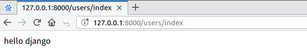

视图模板初步使用
Django中的视图
- 同Flask框架一样，Django也使用 视图 来编写Web应用的业务逻辑。
- Django的视图也就是一个函数，可称为 视图函数
- 视图 定义在应用的
views.py文件中的 - 视图 需要绑定一个URL地址（路由），才能被django框架找到并调用执行
一、视图初步使用
需求: 编写视图并配置URL(路由)，实现一个显示界面
- 需求： 当在浏览器中访问URL地址
http://127.0.0.1:8000/users/index时，显示hello django信息 - 实现：
- 需要编写一个视图函数
- 针对该视图配置访问路由
1. 创建视图
打开刚创建的users模块，在 views.py 中编写视图代码。
from django.http import HttpResponse
def index(request):
"""访问首页的视图"""
return HttpResponse("hello django")

关于视图的说明：
关于视图【理解】
- 视图不是由开发者主动调用的，而是由
Django框架调用 - 当Django接收到请求时，会进行URL正则匹配，调用对应的视图
- 调用视图时，Django会把请求信息封装为一个
HttpRequest对象，并作为视图的第一个参数传入
- 视图不是由开发者主动调用的，而是由
关于视图的参数
- 视图的第一个参数必须定义，名字可自定义，但习惯命名为
request，类型为HttpRequest - 缺少了该参数，Django在调用视图时，将无法传入
HttpRequest对象
- 视图的第一个参数必须定义，名字可自定义，但习惯命名为
- 关于视图的返回值
- 视图必须返回一个
HttpResponse对象（或其子类对象），不能像Flask一样直接返回字符串 HttpRequest请求对象由Django创建，HttpResponse响应对象由开发人员创建
- 视图必须返回一个
2. 配置URL(路由)
在项目下的
urls.py文件中进行url路由配置如下：# 注意：urlpatterns是一个列表 urlpatterns = [ ... # 配置路由和视图: http://127.0.0.1:8000/users/index # 参数1： 匹配url的正则表达式 # 参数2： 匹配成功后由Django框架调用的视图函数 url(r'^users/index$', views.index), ]注意：此处只是为简单作的初步配置，后续会对URL配置进一步讲解
3. 在浏览器中测试
在浏览器中输入网址 http://127.0.0.1:8000/users/index，确认是否执行了视图的逻辑，返回 hello django 信息
